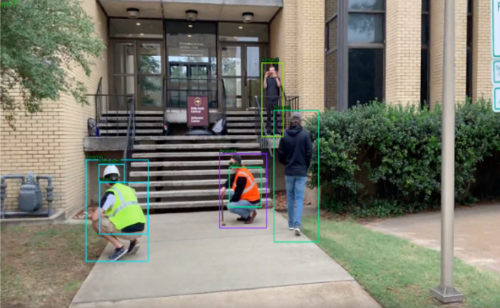
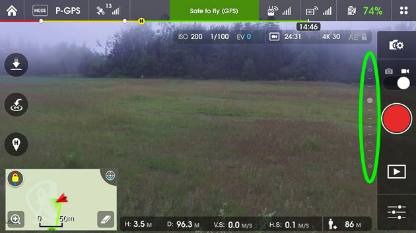
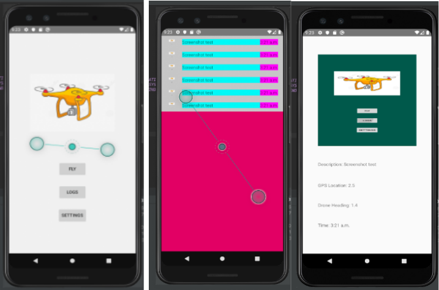
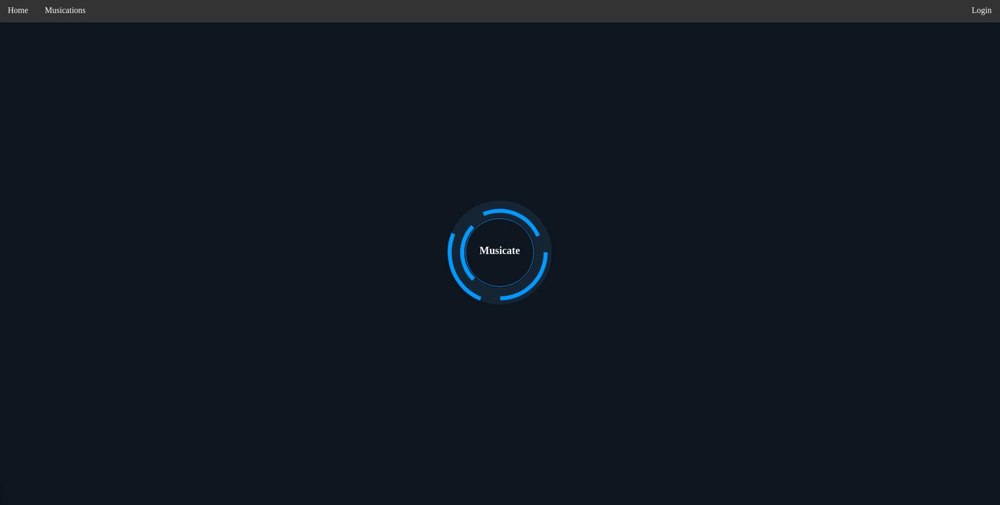
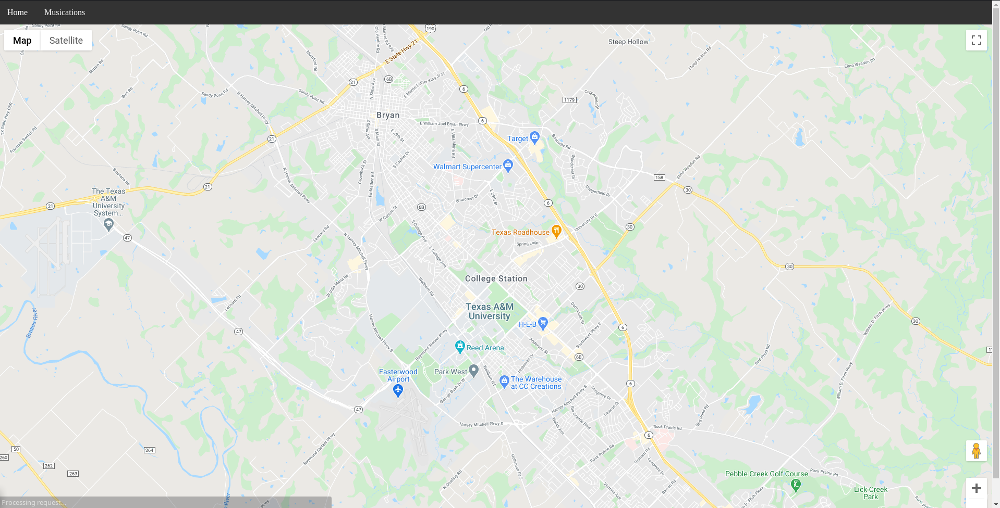

Safety Gear Detection
My group and I partnered with the Construction Science department at A&M to develop this project as a part of my senior capstone course. Our mission was to develop an Android application which can simultaneously operate the drone and perform image processing in order to detect Personal Protective Equipment (PPE) violations. To create our object detection engine, we trained our model using a combination of premade and self-collected data, and utilized a "You Only Look Once" (YOLO) algorithm to perform object deteciton in real time.



Musication
This was a group project conducted as part of my Human-Computer Interactions course. It is essentially a location-based music visualizer which links to the user's Spotify account, and allows them to save the current song as well as their geographical location, a musical snapshot if you will. The idea is that after some traveling and some consistent use, the user would have a map full of various pins which they can go back and relive the memories they associate with the song and to that place.

